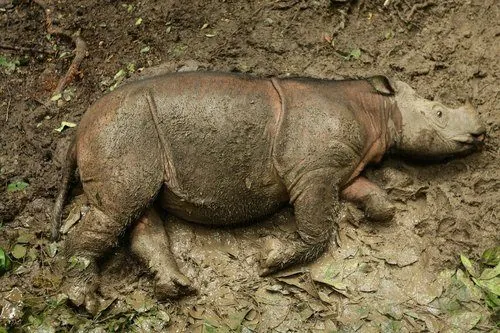

哺乳动物 · 动物界
苏门答腊犀 Dicerorhinus sumatrensis

现存体型最小的犀牛，全身覆红褐色长毛，是唯一有毛的现生犀牛，因盗猎和栖息地丧失仅存数十头，极度濒危。
- 分类
- 门脊索动物门纲哺乳纲目奇蹄目科犀科属双角犀属
- 栖息环境
- 热带雨林与山地森林，偏好有泥浴水源的密林
- 地理分布
- 印度尼西亚苏门答腊岛和婆罗洲的极小种群，马来西亚野外已灭绝
- 保护级别
- IUCN 极危（CR）；CITES 附录Ⅰ
物种志
苏门答腊犀体长 2.4–3.2 米，肩高 1.2–1.45 米，体重 500–1000 kg，是现存最小的犀牛。它的皮肤呈灰褐色，全身覆红褐色长毛，幼兽毛更密；头部有两只角，前角较长，后角较短；鼻端有短而灵活的吻突，适合取食嫩枝。
苏门答腊犀曾分布于苏门答腊、婆罗洲、马来半岛、缅甸和印度东北部的雨林和山地森林，如今仅存于印度尼西亚苏门答腊岛和婆罗洲的极小种群。它以树叶、嫩枝、果实和藤本植物为食，多在晨昏活动，独居，会用泥浴降温并防止蚊虫叮咬。雌性妊娠期约 15–16 个月，每胎 1 仔，繁殖周期长。由于盗猎取角和森林砍伐，苏门答腊犀全球仅存约 40–80 头，被列为极危，是最濒危的犀牛，也是唯一的毛犀。
形态与习性
- 食性树叶、嫩枝、果实与藤本植物
- 体长2.4–3.2 m，肩高 1.2–1.45 m
- 体重500–1000 kg
- 寿命野外约 30–45 年
- 繁殖妊娠期约 15–16 个月，每胎 1 仔
- 外形全身覆红褐色长毛，两只角
- 种群数量全球仅存约 40–80 头
趣味知识
- 苏门答腊犀是唯一全身覆毛的现生犀牛，毛呈红褐色。
- 它是现存体型最小的犀牛，体重不到 1000 kg。
- 全球苏门答腊犀仅剩约 40–80 头，是最濒危的犀牛。
- 苏门答腊犀会进行泥浴，降温并防止蚊虫叮咬。